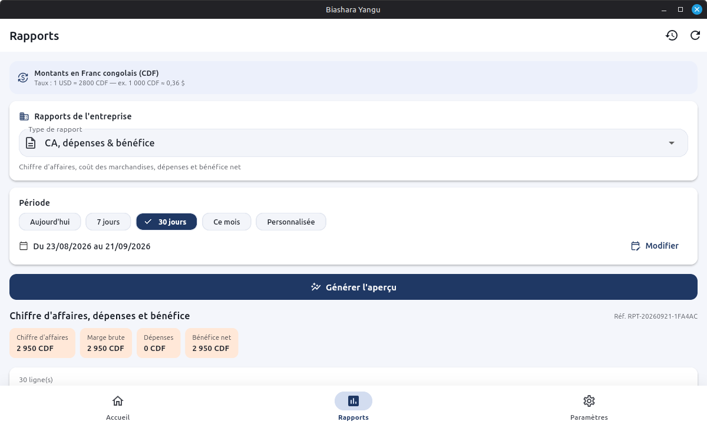

Gestion commerciale complète et marketplace géolocalisée pour les
commerçants, les entreprises et les clients de la République
Démocratique du Congo.
Ventes & caisseStock & inventaireDettes & dépensesMulti-activitésMarketplace géolocaliséeAndroid · Windows · Linux · Web
Biashara Tech
Lubumbashi, République Démocratique du Congo
Édition de septembre 2026
Document public — diffusion libre
§Sommaire
Ce qu'est Biashara YanguObjectif, vision et promesse faite au commerçant.
Qui utilise la plateformeLes huit rôles, du Super Administrateur au vendeur de comptoir.
Le socle de gestion commercialeArticles, stock, ventes, caisse, clients, dettes, dépenses, rapports.
Les activités spécialiséesHôtel, restaurant, salle des fêtes, pharmacie, boulangerie, boucherie, packs.
L'organisation multi-entreprisesUne équipe, plusieurs boutiques, une seule vue.
Biashara — la marketplace locale géolocaliséeRecherche de proximité, comparaison des prix, visibilité mesurée.
L'administration de la plateformeModération, parc des boutiques, gestion des comptes.
Sécurité, confidentialité et exploitationRôles, permissions, RLS, synchronisation, plateformes disponibles.
Comment lire ce document
Toutes les fonctions décrites ici sont effectivement présentes
dans l'application livrée : ce document a été rédigé à partir du
code source et de la base de données de la version 2.3.0, et non à partir
d'un cahier des charges. Lorsqu'une fonction dépend d'une étape restant à
la charge de l'exploitant (installation de la base, validation d'un
dossier commerçant), cela est indiqué explicitement.
1.Ce qu'est Biashara Yangu
Biashara Yangu est une plateforme de gestion commerciale conçue pour les
réalités du commerce congolais : petits commerces de quartier, boutiques
multi-rayons, pharmacies, hôtels, restaurants, salles des fêtes et
ateliers de production.
Le problème que la plateforme résout
Un commerçant gère aujourd'hui son activité avec un cahier, une
calculatrice et sa mémoire. Les conséquences sont connues et coûteuses :
les ventes ne sont pas tracées, le stock réel est inconnu, les crédits
accordés aux clients se perdent, les dépenses ne sont pas rapprochées des
recettes, et le commerçant découvre ses pertes à la fin du mois — sans
pouvoir dire d'où elles viennent.
Par ailleurs, un commerce de quartier reste invisible :
même à trois cents mètres de ses clients potentiels, il n'existe sur aucun
support numérique. Le client, lui, doit se déplacer de boutique en boutique
pour comparer un prix.
La réponse de Biashara Yangu
1. Tenir la gestion, simplement
Enregistrer une vente en quelques secondes, suivre le stock rayon par
rayon, savoir qui doit de l'argent, mesurer ce que rapporte réellement
chaque journée — sans formation comptable.
2. Rendre la boutique visible
Publier sa vitrine et ses articles dans une marketplace locale où les
clients cherchent par produit et trouvent la boutique la plus proche,
avec le prix réellement pratiqué.
Ce qui distingue la plateforme
Principe
Ce que cela change concrètement
Un visiteur n'a jamais besoin de compte
Le catalogue public s'ouvre sans inscription : c'est la condition pour que des clients réels utilisent la marketplace, et donc pour que la visibilité vendue au commerçant ait une valeur.
Les données privées ne sortent jamais
Le catalogue public ne lit aucune table directement : il passe par des fonctions serveur qui n'exposent qu'une liste blanche de colonnes. Prix d'achat, stock exact, clients, dettes et dépenses ne sont pas atteignables par un visiteur, même en cas d'erreur de l'application.
La visibilité est mesurée, pas affirmée
Quatre niveaux distincts — visibilité, intérêt, intention, conversion — permettent au commerçant de voir ce que la plateforme lui apporte réellement. Un simple affichage n'est jamais compté comme un achat.
Le classement n'est pas lié à la taille
Une petite boutique bien renseignée et proche passe devant une grande enseigne éloignée : le critère de pertinence ne dépend jamais du chiffre d'affaires ni de l'ancienneté.
La publicité est séparée et annoncée
Une annonce est servie dans un emplacement dédié, toujours marquée « PUBLICITÉ ». Elle n'est jamais insérée dans les résultats organiques.
Accueil de l'application : les modules affichés s'adaptent automatiquement à l'activité réellement déclarée par l'entreprise.
2.Qui utilise la plateforme
Huit rôles, chacun avec des droits précis. Une même personne peut gérer
plusieurs boutiques, et chaque collaborateur ne voit que ce que son métier
exige.
Rôle
Ce qu'il fait dans Biashara Yangu
Super Administrateur
Accès complet à la plateforme : entreprises, utilisateurs, référentiels, abonnements, paramètres, modération du catalogue public, parc des boutiques, journal d'audit.
Gestionnaire des comptes
Vérifie les dossiers des nouvelles entreprises, les transmet à la finance avec son avis, administre le parc des boutiques et modère le catalogue public.
Finance plateforme
Confirme les paiements d'abonnement, valide l'activation des comptes, suit les impayés et les rapports financiers de la plateforme.
Assistance
Consulte les comptes et le parc pour répondre aux appels ; ne modifie ni les tarifs ni le catalogue public.
Propriétaire
Patron de l'entreprise : ventes, caisse, articles, stock, clients, dettes, dépenses, finance, collaborateurs, rapports, vitrine marketplace, visibilité et campagnes publicitaires.
Vendeur / caissier
Encaisse, gère le panier et le scanner. Il ne peut ni modifier un prix ni consulter la finance.
Magasinier
Stock, articles, inventaires, production. Il voit les quantités, jamais les marges.
Comptable
Dépenses, caisse, rapports et dettes — en lecture plus saisie, sans toucher aux prix de vente.
Le rôle détermine l'écran, et le serveur revérifie
Masquer un bouton ne protège rien. Chaque action sensible est contrôlée
une seconde fois côté serveur : une interface détournée ne permet jamais
d'écrire dans une base où le rôle n'y autorise pas.
3.Le socle de gestion commerciale
Le cœur de la plateforme : ce qui se passe du matin au soir dans une
boutique, sans jargon comptable.
Articles et catalogue
Création, catégories, variantes, conditionnements, packs, import en masse
Un article porte son prix de vente, son unité (pièce, kilo, sac, litre), sa photo, son code-barres ou QR, et un seuil d'alerte. Les variantes couvrent les tailles et couleurs ; les conditionnements gèrent les conversions (un carton de 12) ; les packs composent des offres groupées.
Chaque mouvement est tracé et daté. Les seuils d'alerte font remonter ce qui manque. L'inventaire se clôture avec l'écart calculé automatiquement, sans ressaisie.
Ventes et caisse
Panier, encaissement, scanner QR, reçus, clôture de caisse
La vente s'enregistre en quelques secondes, à l'unité ou au poids. La clôture de caisse rapproche l'encaissé du théorique et rend l'écart visible, en le nommant.
Le crédit accordé n'est plus une parole : le solde est calculé, les remboursements partiels sont enregistrés et l'ancienneté de la dette est affichée.
Dépenses et finance
Dépenses, comptes, soldes, tableau de bord financier
Les charges sont rattachées à l'activité, comparées aux recettes de la période, et deviennent lisibles : ce qui rentre, ce qui sort, ce qui reste.
Rapports et journal d'audit
Rapports de vente, de stock, financiers, export PDF / Excel, audit
Les rapports sortent en documents partageables. Le journal d'audit conserve qui a fait quoi et quand — indispensable quand plusieurs personnes touchent à la caisse.

Rapports : les indicateurs sont calculés à partir des données réelles, jamais estimés.
4.Les activités spécialisées
Biashara Yangu n'est pas un logiciel de boutique appliqué à tout. Chaque
métier dispose de ses propres écrans, parce qu'un hôtel ne se gère pas
comme une boulangerie.
Activité
Écrans dédiés
Hôtel
Chambres, types et tarifs, planning des réservations, réception, arrivées et départs, check-in / check-out, facture de séjour, tableau d'occupation.
Restaurant
Plan de salle, tables et zones, prise de commande, suivi des commandes, écran cuisine, addition.
Salle des fêtes
Salles, disponibilité, réservations d'événements, devis, calendrier des occupations.
Pharmacie
Lots, dates de péremption, alertes d'expiration, traçabilité des produits sensibles.
Boulangerie / production
Matières premières, recettes, ordres de production, consommation automatique des matières, coût de revient.
Boucherie
Découpe, rendement, vente au poids.
Commerce de détail
Variantes, conditionnements, packs, prix par groupe de clients.
Une seule application, une seule facture
Le commerçant qui ajoute une activité ne change pas de logiciel : les
écrans correspondants apparaissent dans son espace, et les données de
chaque activité restent strictement cloisonnées entre elles.
Module hôtel : les chambres, leur état et leur occupation du jour.
5.L'organisation multi-entreprises
Un patron, plusieurs boutiques, une seule vue. La séparation des données
est une règle technique, pas une convention.
Espaces et bascule d'activité
Chaque entreprise dispose d'un ou plusieurs espaces —
une boutique, un hôtel, un restaurant, une salle. Une barre de sélection
permanente indique l'espace actif et permet d'en changer instantanément :
les écrans, les modules et même la devise de travail se rechargent pour la
nouvelle activité.
Cloisonnement réel
Un collaborateur ne voit que les données de l'espace auquel il est rattaché.
Un patron peut consulter l'ensemble de ses espaces, jamais ceux d'une autre entreprise.
Le personnel de la plateforme agit dans le cadre de ses permissions, et chaque intervention est journalisée.
Devises et groupes de prix
La devise de travail (franc congolais, dollar) appartient à l'entreprise :
tous les montants affichés la respectent, sans conversion implicite. Les
groupes tarifaires permettent d'appliquer des prix différents selon le type
de client (détail, revendeur, grossiste).
8
rôles distincts
8
activités métier couvertes
1
application pour tout gérer
6.Biashara — la marketplace locale géolocalisée
Le module qui transforme un logiciel de gestion en outil de croissance :
la boutique devient trouvable, et le client trouve ce dont il a besoin
autour de lui.
Du côté du client — sans aucun compte
Chercher un produit : « riz », « téléphone », « ciment ».
Voir qui le vend, à quel prix et à quelle distance : chaque résultat affiche produit, prix, boutique et distance.
Comparer les prix : la fiche produit rassemble toutes les boutiques qui vendent l'article, classées du moins cher au plus cher.
Agir : appeler, écrire sur WhatsApp, demander l'itinéraire, partager la fiche.
Se situer : carte interactive des boutiques proches, ou simplement le choix d'une ville.
La localisation est une demande, jamais une surveillance
La position n'est demandée qu'au moment où le visiteur touche
« Autour de moi ». Elle n'est ni transmise, ni enregistrée :
elle sert uniquement à calculer un écart, et disparaît aussitôt. En cas
de refus, la plateforme propose une ville ou un point sur la carte — le
résultat est identique. Les statistiques ne conservent qu'une
tranche de distance (« moins d'1 km », « 1 à 3 km »).
Du côté du commerçant — une visibilité qui se mesure
Niveau
Ce que le commerçant apprend
Visibilité
Combien de fois sa boutique et ses articles ont été affichés dans les recherches.
Intérêt
Combien de personnes ont ouvert une fiche, l'ont partagée ou ont cliqué sur une annonce.
Intention
Combien ont demandé l'itinéraire, ont appelé ou ont écrit sur WhatsApp — le signal d'une visite imminente.
Conversion
Combien d'achats ont réellement été attribués à la plateforme, grâce aux codes et QR fournis.
Publication de la vitrine
Le commerçant localise sa boutique de trois façons — sa position actuelle,
un point posé sur la carte, ou la recherche de son adresse — puis
confirme que le point correspond bien à son commerce. Il
décrit ensuite ses horaires, ses contacts publics et ses repères, et
choisit les articles qu'il publie. Un aperçu montre exactement ce que
verront les clients avant l'enregistrement.
Publicité : préparation et modération
Le commerçant compose ses campagnes (produit, boutique, promotion ou offre)
avec un ciblage par ville, quartier, rayon ou catégorie, puis les soumet.
La plateforme active ou refuse. Une annonce porte toujours la mention
« PUBLICITÉ » et n'altère jamais le classement des résultats.
Un téléphone sans compte ouvre directement le catalogue public.Le commerçant qui le souhaite crée son compte et enregistre sa boutique.
7.L'administration de la plateforme
Une plateforme ouverte a besoin d'être tenue : modération du catalogue,
parc des boutiques, gestion des comptes, traçabilité des décisions.
Ce que l'administration peut faire
Domaine
Actions disponibles
Entreprises
Consulter, rechercher, filtrer par ville, activité ou statut ; suspendre, réactiver ; suivre l'abonnement et l'activation.
Boutiques & espaces
Voir le parc complet, savoir pourquoi une boutique n'est pas visible, l'activer ou la désactiver, l'afficher au catalogue ou l'en retirer — avec motif journalisé.
Modération du catalogue
Retirer un article illicite ou trompeur du catalogue public, ou le remettre en ligne. Le motif est obligatoire et reste visible du commerçant.
Publicités
Examiner les campagnes soumises, les activer ou les refuser.
Utilisateurs
Consulter, valider, changer un rôle, et surtout retirer un compte proprement : le système calcule d'abord tout ce qui en dépend.
Activation & abonnements
Double validation : vérification du dossier, puis confirmation du paiement et activation automatique.
Paramètres & référentiels
Villes, activités, groupes tarifaires, types d'activités, devise de la plateforme, permissions par rôle.
Audit & sécurité
Journal des connexions et des opérations sensibles, tableau de bord de sécurité, maintenance assistée.
Retirer un compte : trois stratégies, jamais de perte silencieuse
Supprimer une ligne utilisateur détruirait des ventes, des paiements, des
dettes ou des traces d'audit. L'administration choisit donc en connaissance
de cause, après avoir vu l'impact chiffré :
Un compte qui a produit de l'activité et dont on veut effacer l'identité.
Nom, prénom et photo effacés ; ventes, paiements et audits restent traçables.
Suppression réelle
Un compte créé par erreur, sans aucune donnée.
Effacement définitif — refusé par le serveur dès qu'une donnée dépend du compte.
Un propriétaire ne s'anonymise pas par accident
Si le compte à retirer est le propriétaire d'une entreprise qui possède
des boutiques, la plateforme refuse l'anonymisation et demande un
transfert de propriété. Sans cette règle, une entreprise pourrait se
retrouver sans responsable.
8.Sécurité, confidentialité et exploitation
Sécurité
Permissions à deux niveaux — l'interface masque ce qui n'est pas autorisé, et le serveur revérifie chaque opération sensible.
Cloisonnement par entreprise — les règles d'accès au niveau des lignes empêchent un compte de lire les données d'une autre entreprise, y compris par une requête forgée.
Catalogue public en liste blanche — seules des colonnes explicitement destinées au public sont exposées ; les tables du module marketplace sont inaccessibles aux visiteurs.
Journal d'audit — connexions, changements de statut, modérations, retraits de compte : chaque décision sensible laisse une trace horodatée.
Verrouillage de compte — après plusieurs échecs de connexion, le compte se verrouille temporairement ; les tentatives sont comptabilisées et visibles de l'administration.
Confidentialité des visiteurs
Aucune position de visiteur n'est stockée. Aucune adresse IP, aucun
identifiant d'appareil et aucun identifiant de session n'est conservé
avec une recherche. Ce qui est mesuré — le texte recherché, la ville, le
nombre de résultats, une tranche de distance — ne permet pas de
rattacher une recherche à une personne.
Synchronisation et fonctionnement hors connexion
L'application travaille d'abord sur l'appareil : les ventes s'enregistrent
même sans réseau, puis remontent automatiquement au serveur. Les données
partagées entre plusieurs appareils se rafraîchissent en direct, ce qui
évite les doubles saisies quand la caisse et le bureau travaillent en même
temps.
Plateformes disponibles
Plateforme
Usage typique
Points d'attention
Android
Caisse, vendeurs, commerçants en déplacement.
Lecteur de QR, notifications locales, photo des articles.
Windows / Linux
Poste de gestion, bureau, comptabilité.
Vue élargie, grilles multi-colonnes, impression des rapports.
Web
Consultation et marketplace depuis un navigateur.
Le catalogue public est consultable sans installation.
iOS
Usage sur iPhone / iPad.
Nécessite une signature Apple pour la distribution hors App Store.
BIASHARA YANGU — Présentation officielle de la plateforme
Version 2.3.0 · Septembre 2026 · Biashara Tech, Lubumbashi